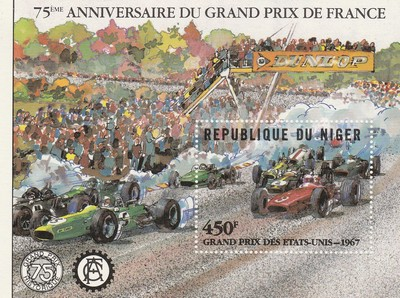
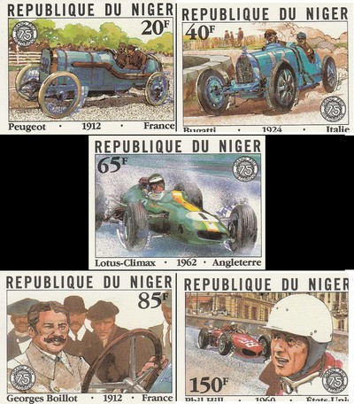
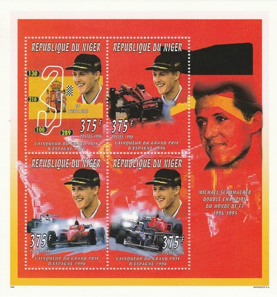
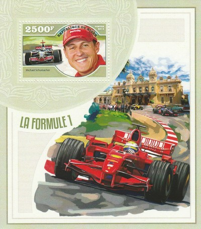
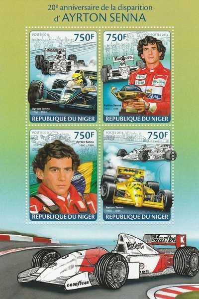
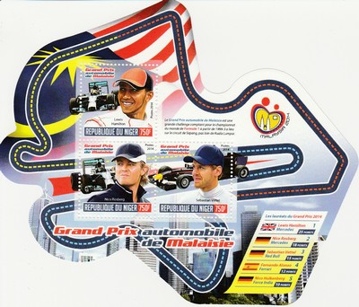
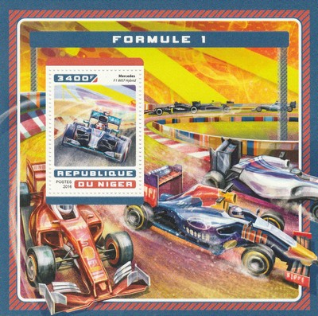
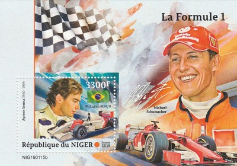
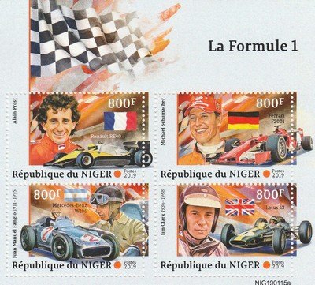

Republic of Niger
 |
 Issue date: 1996 In 1996, Jacques Villeneuve started racing in F1 with Williams-Renault (having won the IndyCar World Series in 1995). This stamp shows Villeneuve with his FW-18 from that year. In 1996, Villeneuve was runner up to Damon Hill (in the sister Williams car) in the drivers championship, winning 4 races. The following year, in 1997, Villeneuve took the drivers title in the Williams-Renault FW-19.  Issue date: 1981 A mini sheet commemorating the 75th anniversary of the French Grand Prix. The 1906 French Grand Prix was the first Grand Prix motor race and took place at Le Mans on June 26 and June 27 1906. 32 cars set off at 90-second intervals to complete 12 laps of a 64-mile circuit on the public roads to the east of the city. The field was led away by Fernand Gabriel's Lorraine-Dietrich. The 1967 French Grand Prix, which was held at the Bugatti Circuit, Le Mans on July 2, 1967. Graham Hill was on pole and led away for the first lap until Jack Brabham took over. On lap 7 Jim Clark took the lead and Hill passed Brabham to make it a Lotus 1-2. Hill then retook the lead until his crown-wheel and pinion failed on lap 14. The same problem caused Clark's retirement from the lead on lap 23, leaving Brabham ahead of Dan Gurney, Chris Amon and Denny Hulme. On lap 41 a fuel line broke on Gurney's car, making it a Brabham 1-2 and Amon's throttle cable broke several laps later. Brabham drove home serenely to win his first race in eight Grands Prix and justify his position as reigning World Champion  Issue date: 1981 A set of 5 stamps commemorating the 75th anniversary of the French Grand Prix. In 1960, the French Grand Prix was held at Reims-Gueux on July 3rd. Phil Hill, driving a Ferrari 246, retired on lap 29 with transmission failure. In 1962, the French Grand Prix was held at Rouen-Les-Essarts on July 8th. The Lotus-Climax was used by 6 entrants; the best result for the Lotus-Climax at this race was 7th for Frenchman Maurice Trintignant.  Issue date: 1998 A mini sheet commemorating the 50th anniversary of Ferrari - in 1947 Ferrari constructed the 12-cylinder, 1.5 L Tipo 125, the first racing car to bear the Ferrari name. A Formula One version of the Tipo 125, the Ferrari 125 F1 was developed in 1948 and entered in several Grand Prix, at the time a World Championship had not yet been established. Jose Froilan Gonzalez - drove for Ferrari in 1951, 1954, 1955, 1957 and 1960 and is noted for providing Ferrari with their first ever F1 race win in 1951 at the British Grand Prix Michael Schumacher - drove for Ferrari from 1996 to 2006  Issue date: 1996 A mini sheet of four values commemorating Michael Schumacher's two drivers' titles of 1994 and 1995. The 1994 season was Schumacher's first Drivers' Championship. The season, however, was marred by the deaths of Ayrton Senna (witnessed by Schumacher, who was directly behind in 2nd position) and Roland Ratzenberger during the San Marino Grand Prix, and by allegations that several teams, but most particularly Schumacher's Benetton team, broke the sport's technical regulations. In 1995 Schumacher successfully defended his title with Benetton. He now had the same Renault engine as Williams. He accumulated 33 more points than second-placed Damon Hill. With team-mate Johnny Herbert, he took Benetton to its first Constructors' Championship and became the youngest two-time world champion in F1 history.  Issue date: 2014 A mini sheet of values featuring the following F1 drivers: - Sebastian Vettel - Fernando Alonso - Jenson Button - Lewis Hamilton  Issue date: 2014 A commemorative stamp featuring Michael Schumacher.  Issue date: 2014 A commemorative stamp for the 20th anniversary of the death of Ayrton Senna.  Issue date: 2014 A commemorative sheet for the 20th anniversary of the death of Ayrton Senna.  Issue date: 2014 A mini sheet of values featuring the 2014 Malaysian Grand Prix, the race was held on the 30th March 2014 and was the second race of the season. The race was dominated by Lewis Hamilton - he took pole, the fastest lap and the race win ahead of team mate Nico Rosberg and Sebastian Vettel in the Red Bull.  Issue date: 21st December 2016 A mini sheet of values featuring various F1 cars from the 2016 season: - Ferrari SF16-H - McLaren MP4/31 - Mercedes F1 W07 Hybrid - Red Bull RB12  Issue date: 21st December 2016 A single stamp featuring the Mercedes F1 W07 Hybrid. The Mercedes F1 W07 Hybrid was the dominant car in the 2016 season - a close battle between drivers Lewis Hamilton and Nico Rosberg culminated in Rosberg winning the drivers' title and Mercedes comfortably took the constructors' title. The F1 W07 Hybrid holds the following F1 records: - Most championship points in a season: 765 Championship Points - Most wins in a season: 19 wins - Most pole positions in a season with highest percentage: 20 Pole Positions (95.2%) - Most podiums in a season: 33 podiums  Issue date: 27th February 2019 A mini sheet of one value featuring Michael Schumacher, Ayrton Senna and the McLaren MP4/8.  Issue date: 27th February 2019 A mini sheet of four values featuring the following cars and drivers: - Alain Prost, Renault RE40 - 1983 - Michael Schumacher, Ferrari F2001 - 2001 - Juan Manuel Fangio, Mercedes-Benz W196 - 1954, 1955 - Jim Clark, Lotus 43 - 1966, 1967 |